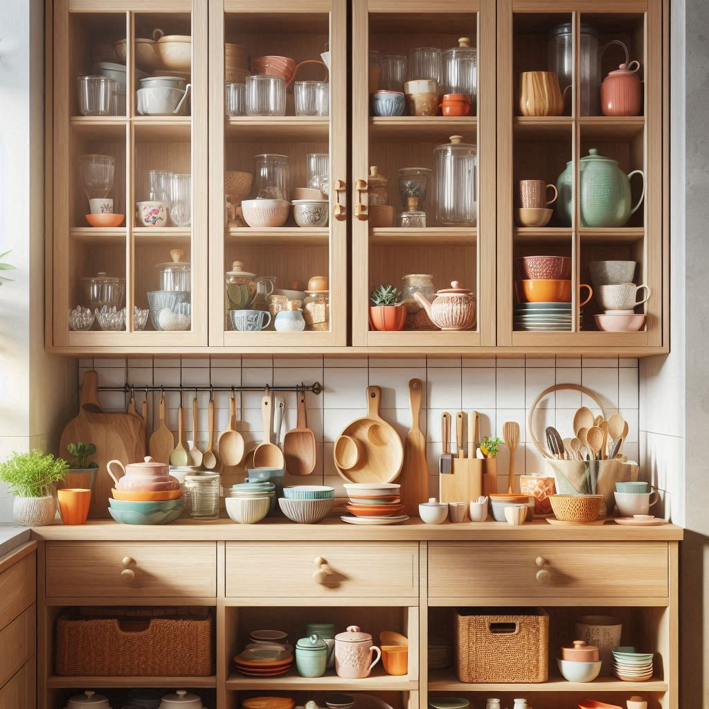

|
|
 | |
| 木作裝潢 | 木作廚具 | 施作方式 | 研習心得 |
並留出約 18 英寸的空間放置小型家電和食物準備。
選擇材料：
櫃子的箱體通常使用堅固的硬木夾板，容易切割。
臉框部分可以使用實木，具有耐用性且可塗漆或染色。
背板可以使用較薄的夾板或硬纖維板，特別是如果櫃子會固定在牆上，這樣可以節省成本並保持穩定性。
裁切和組裝：
使用鋸子從 3/4 英寸（19 毫米）的夾板中裁切出櫃子的板材。
如果有櫃門，則使用實木裁切出櫃門。
使用木膠水將底部和側板連接起來，形成櫃子的箱體。
使用扣接連接背部支撐板，然後釘上背板。
其他步驟：
安裝櫃內的搁板。
添加櫃門和五金配件。
打磨、上漆或染色櫃子。
簡單說，木作櫃的施工需要精確的尺寸、選擇適合的材料，並按照步驟進行裁切和組裝。